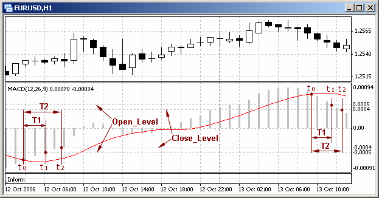
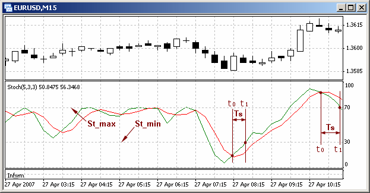

User-Defined Function Criterion()
int Criterion()
The function calculates trading criteria. It can return the following values:
10: triggered a trading criterion for closing of market order Buy;20: triggered a trading criterion for opening of market order Sell;11: triggered a trading criterion for closing of market order Buy;21: triggered a trading criterion for opening of market order Sell;0: no important criteria available;-1: the symbol used is not EURUSD.
The function uses the values of the following external variables:
St_min: the lower level of indicator Stochastic Oscillator;St_max: the upper level of indicator Stochastic Oscillator;Open_Level: the level of indicator MACD (for order opening);Close_Level: the level of indicator MACD (for order closing).
In order to display messages, the function uses the data function Inform().If the function Inform() is not included in the EA, no messages will be displayed.
//------------------------------------------------------------------------- // Criterion.mqh // The code should be used for educational purpose only. //-------------------------------------------------------------------- 1 -- // Function calculating trading criteria. // Returned values: // 10 - opening Buy // 20 - opening Sell // 11 - closing Buy // 21 - closing Sell // 0 - no important criteria available // -1 - another symbol is used //-------------------------------------------------------------------- 2 -- // External variables: extern int St_min=30; // Minimum stochastic level extern int St_max=70; // Maximum stochastic level extern double Open_Level =5; // MACD level for opening (+/-) extern double Close_Level=4; // MACD level for closing (+/-) //-------------------------------------------------------------------- 3 -- int Criterion() // User-defined function { string Sym="EURUSD"; if (Sym!=Symbol()) // If it is a wrong symbol { Inform(16); // Messaging.. return(-1); // .. and exiting } double M_0, M_1, // Value MAIN at bars 0 and 1 S_0, S_1, // Value SIGNAL at bars 0 and 1 St_M_0, St_M_1, // Value MAIN at bars 0 and 1 St_S_0, St_S_1; // Value SIGNAL at bars 0 and 1 double Opn=Open_Level*Point; // Opening level of MACD (points) double Cls=Close_Level*Point; // Closing level of MACD (points) //-------------------------------------------------------------------- 4 -- // Parameters of technical indicators: M_0=iMACD(Sym,PERIOD_H1,12,26,9,PRICE_CLOSE,MODE_MAIN,0); // 0 bar M_1=iMACD(Sym,PERIOD_H1,12,26,9,PRICE_CLOSE,MODE_MAIN,1); // 1 bar S_0=iMACD(Sym,PERIOD_H1,12,26,9,PRICE_CLOSE,MODE_SIGNAL,0);//0 bar S_1=iMACD(Sym,PERIOD_H1,12,26,9,PRICE_CLOSE,MODE_SIGNAL,1);//1 bar St_M_0=iStochastic(Sym,PERIOD_M15,5,3,3,MODE_SMA,0,MODE_MAIN, 0); St_M_1=iStochastic(Sym,PERIOD_M15,5,3,3,MODE_SMA,0,MODE_MAIN, 1); St_S_0=iStochastic(Sym,PERIOD_M15,5,3,3,MODE_SMA,0,MODE_SIGNAL,0); St_S_1=iStochastic(Sym,PERIOD_M15,5,3,3,MODE_SMA,0,MODE_SIGNAL,1); //-------------------------------------------------------------------- 5 -- // Calculation of trading criteria if(M_0>S_0 && -M_0>Opn && St_M_0>St_S_0 && St_S_0<St_min) return(10); // Opening Buy if(M_0<S_0 && M_0>Opn && St_M_0<St_S_0 && St_S_0>St_max) return(20); // Opening Sell if(M_0<S_0 && M_0>Cls && St_M_0<St_S_0 && St_S_0>St_max) return(11); // Closing Buy if(M_0>S_0 && -M_0>Cls && St_M_0>St_S_0 && St_S_0>St_min) return(21); // Closing Sell //-------------------------------------------------------------------- 6 -- return(0); // Exit the user-defined function } //-------------------------------------------------------------------- 7 --
In the program, the values of two indicators calculated on the current and on the preceding bar are used (block 4-5). Usually, when you use indicators Stochastic Oscillator and MACD, the signals for buying or selling are formed when two indicator lines meet each other. In this case, we use two indicators simultaneously to define trading criteria. The probability of simultaneous intersection of indicator lines of two indicators is rather low. It is much more probable that they will intersect one by one - first in one indicator, a bit later - in another one. If the indicator lines intersect within a short period of time, two indicators can be considered to have formed a trading criterion.
For example, below is shown how a trading criterion for buying is calculated (block 5-6):
if(M_0>S_0 && -M_0>Opn && St_M_0>St_S_0 && St_S_0<St_min)
According to this record, the criterion for buying is important if the following conditions are met:
- in indicator MACD, indicator line MAIN (histogram) is above indicator line SIGNAL and below the lowest level Open_Level (Fig. 157);
Fig. 157. Necessary condition of MACD indicator line positions to confirm the importance of trading criteria for opening and closing of orders.

- in indicator Stochastic Oscillator, indicator line MAIN (histogram) is above indicator line SIGNAL and below the lowest level St_min (Fig. 158).
Fig. 158. Necessary condition of Stochastic Oscillator indicator line positions to confirm the importance of trading criteria for opening and closing of orders.
